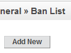
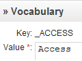

Getting Started with ApPHP Medical Appointment (v3.0.0 or above)
-
1. General and Site Settings.
- 1.1 Setting up site parameters.
- 1.2 Banning Emails/IP Addresses.
- 1.3 Countries Management.
- 1.4 Preview.
- 2.1 My Account.
- 2.2 Statistics.
- 2.3 Roles & Privileges.
- 2.4 Admins Management.
- 2.5 Patients Management.
- 2.6 Doctors Management.
- 3.1 Clinic Info.
- 3.2 Integration.
- 3.3 Specialities Management.
- 3.4 Schedules.
- 3.5 Timeoff.
- 4.1 Settings.
- 4.1.1 Appointments Settings.
- 4.2.2 Insurances.
- 4.2.3 Visit Reasons.
- 4.2 Management.
- 4.2.1 Admin Appointments.
- 4.2.2 Appointments Management.
- 4.2.3 Appointments Statistics.
- 5.1 Currencies.
- 5.2 Doctor Membership Plans.
- 5.3 Orders.
- 5.4 Statistics.
- 7.1 Editing Homepage.
- 7.2 Creating new pages.
- 7.3 Editing pages.
- 7.4 Editing system pages.
- 7.5 Remove/Restore pages.
- 9.1 Email Templates.
- 9.2 Mass Mail.
- 10.1 Modules Management.
- 10.2 Patients Module.
- 10.3 Payments Module.
- 10.4 Contact Us Module.
- 10.5 Comments Module.
- 10.6 Gallery Module.
- 10.7 Banners Module.
- 10.8 News Module.
- 10.9 FAQ Module.
- 10.10 Google Maps Module.
- 10.11 Appointments Reminder Module.
- 10.12 Ratings Module.
- 10.13 Backup & Restore Module.
- 11.1 Registration & Login.
- 11.1.1 Doctor Registration.
- 11.1.2 Doctor Login.
- 11.2 Doctor Control Panel.
- 11.2.1 Dashboard.
- 11.2.2 Edit Account.
- 11.2.3 My Specialities.
- 11.2.4 View Profile.
- 11.2.5 Membership Plans.
- 11.2.6 My Orders.
- 11.2.7 My Images.
- 11.2.8 My Addresses.
- 11.2.9 Appointments Management.
- 11.2.10 Schedules Management.
- 11.2.11 Timeoff Management.
- 12.1 Registrations & Login.
- 12.1.1 Patient Registration.
- 12.1.2 Patient Login.
- 12.2 Patient Control Panel.
- 12.2.1 Dashboard.
- 12.2.2 Edit Account.
- 12.2.3 Appointments Management.
1. General and Site Settings.
This section describes how to manage a general settings of your site.
1.1 Setting up site parameters.
{kind=link}
Select Settings from General Menu. On this page you can easy change/manage important parameters of your site. You will see there 8 Tabs: General Settings, Visual Settings, Datetime & Price Settings, Email Settings, Templates & Styles, Server Info, Site Info and Cron Jobs
On General Settings Tab you can change:
- Site Offline
- Offline Message
- SEO URLs
- WYSIWYG Editor
- RSS Feed Type
- Caching / Caching lifetime - caching for pages
On Visual Settings Tab you can change: (change value in dropdown box to make changes for appropriate language). You may also apply changes in META tags to all pages.
- Header Text
- Slogan
- Footer Text
- Tag <TITLE>
- Meta Tag <KEYWORDS>
- Meta <DESCRIPTION>
On Datetime & Price Settings Tab you can change:
- Date Format
- Time Format
- Time Zone
- Week Start Day
- Price Format
On Email Settings Tab you can change:
- Mailer Type
- Email Templates Editor
- Email Address
- SMTP parameters
On Social Networks Tab you can change:
- Social Networks links
On Templates & Styles Tab you can change:
- Template
On Server Info Tab you can view the important info about your server:
- PHP and MySQL versions
- Server parameters
- etc
On Site Info Tab you can view the ranks of your site (click on update button to refresh them):
- Google and Alexa
On Cron Jobs Tab you can define a type of cron jobs (or stop it):
- Batch
- Non-batch
1.2 Banning Emails/IP Addresses.
{kind=link}
Select a Ban List from the General Menu. On this page you can easy add/change or remove banned emails or IP addresses.
1.3 Countries Management.
Select Countries from the General Menu. On this page you can manage a list of countries with a standard MicroGrid page. You can add, edit or delete existing country. Also you may change a priority order, activate it etc. To manage states for a specific country click States link. On the page that will be opened you could add/delete states for the selected country.
1.4 Preview.
The Preview feature allows admin to view the site without logging out. To view the site's Front-End simply click on General -> Preview. If you want back to Administrator Panel click the [Back to Admin Panel] link that will appear instead of site's slogan text.
2. Accounts Management.
This section describes how to manage site accounts.
2.1 My Account.

Log into Admin Panel, using administrator username and password. Then select My Account from the Accounts Menu or from the top links of the page. You will see a page, where you can change your email, password and preferred language. To change data simply enter new values and then click Change button.
2.2 Statistics.
Select Statistics from the General Menu. On this page you can view a general statistics of your site:
- Patients (Map Overlay)
- Patients (Registrations)
- Patients (Logins)
- etc
2.3 Roles & Privileges.
Select Roles & Privileges from the Accounts Menu. You will see a page, where existing site roles are defined: Owner, Main Admin and Simple Admin. You may specify the privileges for each role by clicking a [ Privileges ] link. Privileges for Site Owner cannot be changed by anyone. Generally, the Main Admin is the role that has all rights, like a Site Owner (but may be deleted by the Owner) and a Simple Admin type is the type which has reduced rights.
2.4 Admins Management.
Select Admins from Accounts -> Admins Management menu. On this page you can manage all site administrator accounts. You may add, edit or delete existing accounts. When you create a new admin account you have to define an account type (role): Simple Admin or Main Admin. The privileges for selected role will be applied automatically for created account.
2.5 Patients Management.
Patient Groups:
Select Patient Groups from the Accounts Menu. On this page you can add, edit or delete existing groups of Patients. You have to enter group name and description (optional). Patients can be assigned to the one of existing groups.
Patients:
Select Patients from the Accounts Menu. You will see the Patients Management page. On this page you can add, edit or delete existing accounts of Patients.
2.6 Doctors Management.
Doctors Settings:
This page allows you to define Doctors settings, like:
- Specifies whether to allow existing doctors to login
- Specifies whether to allow Remember Me feature
- Specifies whether to allow doctors to register
- Defines whether confirmation (which type of) is required for registration
- Specifies whether to allow image verification (captcha) on doctor registration page
- Specifies whether to alert admin on new doctor registration
- Specifies whether to allow doctors to restore their passwords
- Specifies whether to allow changing doctor password by Admin
- Specifies whether to allow patients to search by doctors by name
- Specifies whether to allow patients to search by doctors by location
Doctors:
Select Doctors Management from the Clinic Management. You will see a Doctors Management page. On this page you can add, edit or delete existing doctor profiles.
3. Clinic Management.
This section describes how to manage doctors, specialities, schedules and other important clinic settings.
3.1 Clinic Info.
This page allows you to manage important clinic info, like: timezone, phone and fax numbers, clinic location and code for Google Maps. You may also translate this information into other languages, installed on your site.3.2 Integration.
Integration allows you to generate JavaScript code for a special widget and put it in appropriate place on your website to get visible the Appointments block.3.3 Specialities Management.
Select Specialities Management from the Clinic Management. You will see a Specialities Management page. On this page you can add, edit or delete specialities for your clinic.3.4 Schedules.
The Schedules page allows administrator to create and manage doctor's schedules. Administrator can specify a period of time for schedule and then define working time blocks for weeks days in a schedule period.3.5 Timeoff.
The Timeoff page allows administrator to create and manage doctor's time offs - periods of time, when a doctor cannot work.4. Appointments.
This section describes how to work with Appointments.
4.1 Settings.
4.1.1 Appointments Settings.
This page allows you to define Appointments settings, like:- Whether Appointments module is active or not
- The maximum allowed appointments (not approved) per patient in a day
- Whether the approval (which type of) is required for appointments
- Time delay (unused slots) before the first allowed appointment slot
- Specifies whether to send notification to admin about creating appointments or changing its status
- Specifies whether to send notification to doctor about creating appointments or changing its status
- Maximum period of time (in hours) after which all unconfirmed appointments will be cancelled
- Specifies patient access level to view doctor schedules
- Defines how many doctor profiles will be shown on the search result page
- Specifies whether to allow multiple appointments to the doctor in the same day
4.1.2 Insurances.
Select Insurances from the Appointments menu. On this page you may define all available types of insurances.4.1.3 Visit Reasons.
Select Visit Reasons from the Appointments menu. On this page you may define all available types of visit reasons.4.2 Appointments Management.
4.2.1 Admin Appointments.
On this page administrator can create appointment for a given patient.4.2.2 Appointments Management.
On this page administrator can manage all appointments made by the patients: view details, edit them, approve or cancel appointments etc.4.2.3 Appointments Statistics.
Statistics allows you to track amount of appointments grouped by months, learn how your patients are distributed by countries and get some other useful information.5. Payments.
This section describes how to manage payments.
5.1 Currencies.
Select Currencies from the Payments menu. You will see a Currencies Management page. This page allows you to manage currencies, used while purchasing Advertise Plans. On this page you can add/edit or delete existing currencies. One currency may be defined as a "default", that means it will be used as a default currency for your site. You have define a rate of each currency relatively to the "default" one.
5.2 Doctor Membership Plans.
Select Doctor Membership Plans from the Payments menu. On this page you can manage Membership Plans, change and edit plans settings. One plan may be defined as a "default", that means it will be used as a default plan for your site. This plan will be applied automatically to doctor's account after succesful registration.
5.3 Orders.
Orders page gives you possibility to manage existing orders, placed by doctor. On this page you can view orders description, change orders status and filter them by date, doctor name etc. You may also send invoices and print selected orders.
5.4 Payments Statistics.
Statistics allows you to track amount of orders groped by months, learn how orders are distributed by countries and get some other useful information.
6. Menu Management.
This section describes how to manage menu categories.
6.1 Creating menu categories.

Click Add New Menu from the Menus Management. In the textbox enter a proper name for menu category and select a placement (left, top, right or bottom - depending on whether your template supports it) from dropdown list, also choose a language. You may also define access level for the menu: All(public) or only Registered users. Press Create button to finish adding new menu category process. Menu categories will appear sorted by order from smallest to highest (last added category automatically gets the lowest priority).
6.2 Editing menu categories.
To edit existing menu category - select Edit Menus from the Menus Management page and then click an appropriate category from the list. Perform all changes you need and then press on Save Changes button. You may also change a display order of each menu category.
If you want to delete existing menu category - go to Edit Menus page, then select appropriate menu category from the list and click a Delete link at the right side.
7. Pages Management.
This section describes how to manage pages.
7.1 Editing Homepage.
To edit Homepage - select Edit Home Page from the Pages Management menu. Perform all changes you need and then press Save Changes button. You may also define meta tags for your Homepage, like: title, description, keywords and also some other settings.
If you need to insert/upload images - click Insert Image icon from the toolbar of WYSIWYG editor, then upload/select your image and press Submit button.
7.2 Creating new pages.
Click Add New Page from the Pages Management menu. In the Page Header textbox enter a proper name for this page. Choose appropriate value from dropdown list to connect this page to some menu and enter a text in Page Text textarea. You may also define is the page will be an article or just a link, allow/block comments, define access level, meta tags, show or not show this page in search results, publish or just save changes without publishing etc. Click Create button to finish the process.
If you need to insert/upload images - click Insert Image icon from the toolbar of WYSIWYG editor, then upload/select your image and press Submit button.
7.3 Editing pages.
To edit existing page - click Edit Pages from the Pages Management menu, then select an appropriate page from the list. Perform all changes you need and then press Save Changes button.
If you need to insert/upload images - click Insert Image icon from the toolbar of WYSIWYG editor, then upload/select your image and press Submit button.
7.4 Editing system pages.
To edit system pages - click Edit System Pages from the Pages Management menu, then select an appropriate page from the list. Perform all changes you need and then press Save Changes button.
7.5 Remove/Restore pages.
To remove existing page - click Edit Pages from the Pages Management menu, then select an appropriate page from the list and click Remove link from the right side. This page will be placed in the Trash.
To restore removed page click Trash from the Pages Management, find an appropriate page and click Restore link. The page will be restored. If you want to permanently delete this page, click Delete link.
8. Languages Settings.
This section describes how to manage languages and define language settings.
8.1 Inserting/Editing Language.
{kind=link}
Click Languages from the Languages Settings menu. On this page you will see a list of existing languages. You can add new language or edit existing, change display order etc. When you add or edit existing language you need to insert a name of the language, abbreviation, text direction, icon image and some other data. When all needed data is entered - press Create/Update button to save it. You have to define one language to be a default language of the site.
When you add new language the system creates for it a copy of vocabulary (a list of predefined constants, used by the system) from the default language and you will need to translate them into the new language.
8.2 Editing language vocabulary.
Click Vocabulary from the Languages Settings menu. On this page you can edit the vocabulary constants of existing languages. To change the text of constant, select an appropriate language from dropdown list, then click [Edit] link and enter new text in a textarea. You may use Google automatic translation to help yourself in this work. To do this simply past in textarea default language text and then click on Translate via Google button (works for Google paid account only).
You may also update your vocabulary by uploading a vocabulary file (if you created such file before or have it from the previous installation). To do this simply click [Upload from File] link, then select vocabulary file, language to update and press on upload and Process button.
9. Mass Mail & Email Templates.
This section describes how to work with Mass Mail & Email Templates.
9.1 Email Templates.
To edit Email Templates go to Mass Mail & Templates -> Email Templates. On this page you can see a list of existing email templates. Email Templates are managed with a standard MicroGrid page. You can add, delete or edit existing records. There are some templates that signed as "system" templates, that cannot be deleted, because they are used by the system.
9.2 Mass Mail.
With the Mass Mail feature, it's possible to create and send powerful mass mail messages to registered patients and/or admins. To do this go to Mass Mail & Templates -> Mass Mail. On this page you can select a template, define targeting group of receivers (or send a test email) and prepare the text of email message. There are some pre-defined constants that may be used in the text of email and will be replaced with appropriate values before sending the email. For example: {YEAR} will be replaced with the current year in YYYY format, {WEB SITE} with website URL etc.
10. Modules.
This section describes how to work with embedded modules.
10.1 Modules Management.

Select Modules Management from the Modules Menu. On this page you can easy install/uninstall existing modules, for example: News, Backup etc. To do this click on [Edit], perform changes and then press Update button.
10.2 Patients Module.
This section describes how to work with the Patients Module.
Patients Module settings.
This page allows you to define Patients settings, like:
- Specifies whether to allow adding new users by Admin
- Defines whether confirmation (which type of) is required for registration
- Specifies whether to allow existing patients to login
- Specifies whether to allow patients to register
- Specifies whether to allow image verification (captcha) on patient registration page
- Specifies whether to alert admin on new patient registration
- Specifies whether to allow patients to restore their passwords
- Specifies whether to allow Remember Me feature
- Specifies whether to allow changing patient password by Admin
10.3 Payments Module.
This section describes how to work with the Payments Module.
Payments Module settings.
This page allows you to define Payments settings, like:
- Activate/Disable payments
- Enable/Disable 'On-line Order' payment type
- Enable/Disable collecting of credit card info for 'On-line Orders'
- Enable/Disable 'PayPal' payment type
- PayPal (business) email
- Enable/Disable '2CO' payment type
- Specifies 2CO Vendor ID
- Enable/Disable 'Authorize.Net' payment type
- Specifies Authorize.Net Login ID and Transaction Key
- Default payment processing system
- Specifies default VAT value for order (in %)
- Enable/Disable sending a copy of order to admin
- Specifies mode for Booking Module: DEMO/REAL
- Defines a maximum number of allowed orders (not completed) per customer
10.4 Contact Us Module.
This section describes how to work with the Contact Us Module.
Contact Us Module settings.
This page allows you to define Contact Us settings, like:
- The email address, that will be used to get sent information
- The keyword that will be replaced with Contact Us form (copy and paste it into the page)
- Specifies whether to allow time delay between sending emails.
- Defines a length of delay between emails in seconds.
- Specifies whether to allow image verification
10.5 Comments Module.
This section describes how to work with the Comments Module.
Comments module settings.
This page allows you to define Comments settings, like:
- Specifies whether to allow comments to articles
- Type of users, who can post comments
- The maximal length of a comment
- Specifies whether to allow image verification (captcha)
- How much comments will be shown on one page
- Specifies whether to allow pre-moderation for comments
- The maximum pending time for deleting of comment in minutes.
Comments Management page.
On this page administrator can manage comments: view, approve, deny or delete them.
10.6 Gallery Module.
This section describes how to work with the Gallery Module.
Gallery Settings.
This page allows you to define Gallery settings, like:
- Allowed types of Image Gallery
- Allowed types of Video Gallery
- The keyword that will be replaced with gallery (copy and paste it into the page)
- Album icon width
- Album icon height
- Number of album icons per line
- The keyword that will be replaced with a certain album images (copy and paste it into the page)
- Defines a wrapper type for gallery
- Specifies whether to show count of images/video under album name
- Specifies whether to show items numeration in albums
Gallery Management.
The Gallery module allows you to create and manage gallery albums on your site. To do this go to Modules -> Gallery -> Gallery Management. On this page you will see a list of existing albums. Albums are managed with a standard MicroGrid page. You can add, delete or edit albums info, define a type of album: images or video etc. To upload/delete images from the certain album - click Upload link. You will be redirected to the Album Items pages, where you could add (upload) and manage album items.
10.7 Banners Module.
This section describes how to work with the Banners Module.
Banners Settings.
This page allows you to define Banners settings, like:
- Whether banners module is active or not
- Type of banner rotation
- Banners rotation delay in seconds
- Using of HTML in slideshow captions
Banners Management.
The Banners module allows you to create (upload) and manage banners on your site. To do this go to Modules -> Banners -> Banners Management. On this page you will see a list of existing banners, that are managed with a standard MicroGrid page. You can add, edit or delete banners, upload banner images etc.
10.8 News Module.

This section describes how to work with the News Module.
News Settings.
This page allows you to define News settings, like:
- How many news will be shown in news block
- Length of news header in block
- Using of RSS channel for news
- Defines whether to show News side block or not
- Defines whether to show Newsletter Subscription block or not
Creation and Management.
The News module allows you to create and manage news on your site. To do this go to Modules -> News -> News Management. On this page you will see a list of previously added news. News are managed with a standard MicroGrid page. You can add, edit or delete news records.
There are two type of news that may be created: news or events. If you create event, visitors could register to this event via online form. All registered users may be viewed via Modules -> News -> News Management -> events()
Subscription Management (Newsletter Subscription).
The News module allows you to create and manage Mailing Lists on your site. You may place a Subscription block on the Front-End of your site and allow visitors to subscribe for news or manually add/remove subscribers via Modules -> News -> Subscription Management page. To send newsletter for subscribers go to Mass Mail -> Templates -> Mass Mail page, then select from Email Address dropdown box "Newsletter Subscribers", prepare the newsletter text and click Send button.
10.9 FAQ Module.
FAQ Settings.
This page allows you to define Banners settings, like:
- Whether FAQ module is active or not
FAQ Management.
The FAQ module allows you to create FAQ categories knowladge base. To do this go to Modules -> FAQ -> FAQ Management. On this page you will see a list of existing FAQ categories. You can add, edit or delete categories records. Once FAQ category is created, you may add category questions and answers. To do this simply click on "Question" link of appropriate category and on the new page create/edit the pairs: question/answer.
10.10 Google Maps Module.
Google Maps Settings.
This page allows you to define following settings for this module:
- Google Maps API Key
- Google Maps image width (in pixels)
- Google Maps image height (in pixels)
10.11 Appointments Reminder Module.
Appointments Reminder Settings.
This page allows you to define following settings for this module:
- Type of the Reminder
- Time interval in hours, before arrival reminder will be sent to patient
- Time interval in hours, before confirm reminder will be sent to doctor
- Time interval in hours, before confirm reminder will be sent to patient
10.12 Ratings Module.
This section describes how to work with the Ratings Module. Ratings Settings.
This page allows you to define Ratings settings, like:
- Type of users, who can rate doctors
- Specifies whether to allow users to rate multiple items per day or not
10.13 Backup & Restore Module.

Creating a backup.
This script allows you easily create backup of your database. To do this go to Modules -> Backup & Restore -> Backup Installation. On this page you can see a list of existing backups. If you want to add new backup press Backup button. After the backup is complete it will appear in the list below.
Restoring from backup.
To restore database from existing backup go to Modules -> Backup & Restore -> Backup Restore page and look on the list of existing backups. Select a backup you want to restore and click on Restore link at the right side. After backup restore is complete, refresh the site or re-login.
11. Doctor Accounts.
This section describes the main features of the doctor accounts, registration and login process and working with the doctor control panel.
11.1 Registration & Login.
11.1.1 Doctor Registration.
This takes just a couple of minutes. To create/register a doctor account type in your browserhttp://{your site}/index.php?doctor=create_account
Enter a name, an email address, choose a password and
enter all other required information. After your registration is confirmed (depends on the systems settings:
auto-approval, email confirmation or admin approval) you could log into doctor control panel.
11.1.1 Doctor Login.
To login as a doctor, type in your browserhttp://{your site}/index.php?doctor=login or click the link
at the bottom of the page. Enter your username, password and click Login button.
Automatic sign-in. If you don't want to enter your username and password every time you want to access your account, check the box next to "Remember Me" near the Password field on the login page. Unless you delete your browser cookies, you won't be asked for your password for 14 days.
11.2 Doctor Control Panel.
11.2.1 Dashboard.
Doctor's Dashboard allows doctor to view account status, manage account settings, personal information, approve or cancel appointments etc.11.2.2 Edit Account.
This page allows doctor to edit a basic account information: Personal Information, Profile Details, Account Details and other Professional Information. On this page doctor can change an account password. The link for removing account is also placed on this page.11.2.3 My Specialities.
This page allows doctor to add and manage specialities. A doctor may have more than one specialty, one of them may be defined as a "default".11.2.4 View Profile.
This page shows a doctor profile info exactly like patients can see it on the site, including professional information, spoken languages, price per visit, addreses etc.11.2.5 Membership Plans.
On Membership Plans page doctor may order appropriate Membership Plan, pay for it and customize profile according to allowed features. Each plan has it's own features, described on this page, like: duration, allowed count of images, addresses etc. After succesful payment the order will apear on My Orders page.11.2.6 My Orders.
On the My Orders page doctor may see a list of orders. For each order in the list there is a table row with the order number, date, status and total sum. Also, a link to the Order Details page is available in the right column.11.2.7 My Images.
On this page doctor can upload images that will be show on doctor's profile page.11.2.8 My Addresses.
On this page doctor can edit addresses, where he/she accepts patients. Doctor can add, edit or delete existing addresses. For each address doctor may define whether it can be viewed by public access or just by registered patients.11.2.9 Appointments Management.
On this page doctor can manage all appointments made by the patients: view details, add comments, approve or cancel them etc.11.2.10 Schedules Managementt.
The Schedules page allows doctor to create and manage schedules. It allows to specify a period of time for schedule and then define working time blocks for weeks days in a schedule period.11.2.11 Timeoff Managementt.
The Timeoff page allows doctor to create and manage time offs - periods of time, when doctor cannot work.12. Patient Accounts.
This section describes the main features of the patient accounts, registration and login process and working with the patient control panel.
12.1 Registration & Login.
12.1.1 Patient Registration.
This takes just a couple of minutes. To create/register a patient account type in your browserhttp://{your site}/index.php?patient=create_account. Enter a name, an email address, choose a password and
enter all other required information. After your registration is confirmed (depends on the systems settings:
auto-approval, email confirmation or admin approval) you could log into patient control panel.
12.1.2 Patient Login.
To login as a patient, type in your browserhttp://{your site}/index.php?patient=login. Enter your username,
password and click Login button. You may also login from the Authentication block placed at the side column.
Automatic sign-in. If you don't want to enter your username and password every time you want to access your account, check the box next to "Remember Me" near the Password field on the login page. Unless you delete your browser cookies, you won't be asked for your password for 14 days.